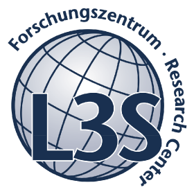
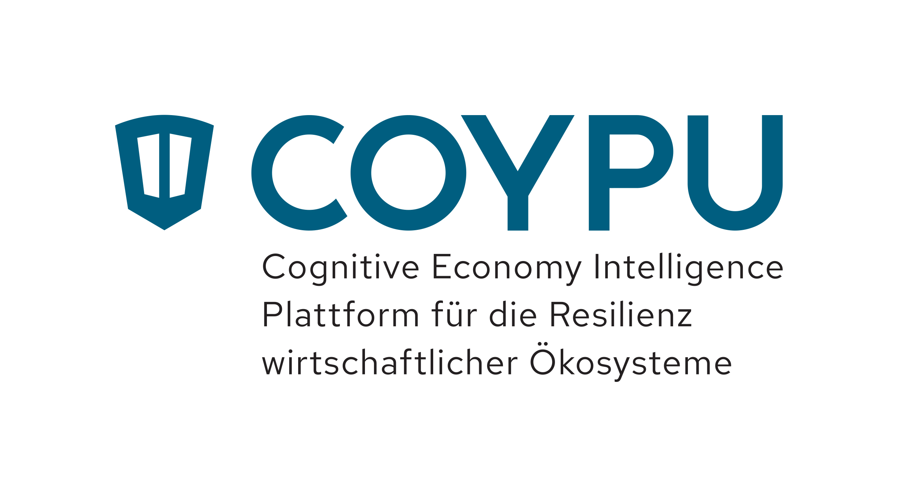
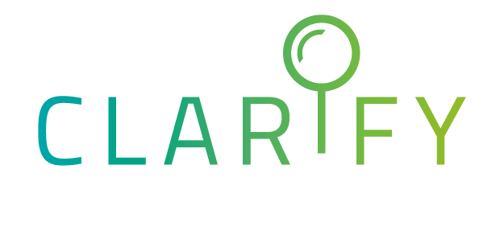
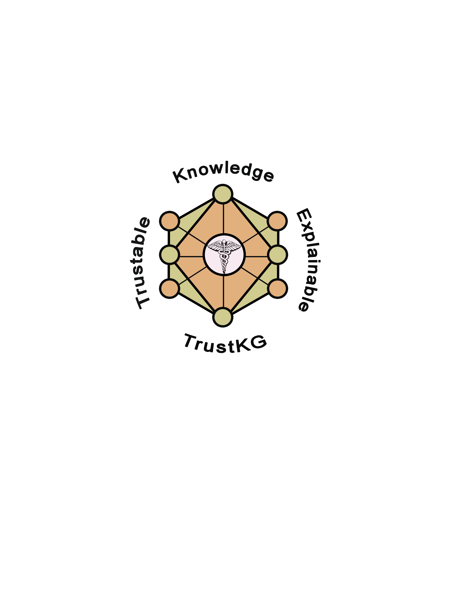

KGC Tutorial 2022
Despite the emergence of knowledge graphs, exposed via endpoints or as Linked Data, formats like CSV, JSON or XML are still the most used for exposing data on the web. Some solutions have been proposed to describe and integrate these resources using declarative mapping languages (e.g., RML, R2RML, etc) and many of those are equipped with associated RDF generators (e.g. RMLMapper, SDM-RDFizer, FunMap, etc). The use of these technologies enables the construction of knowledge graphs in a declarative way. However, they have a steep learning curve for new users. The aim of this tutorial is, from a practical perspective, to explain in detail the process of constructing knowledge graphs, from writing mappings to their use with suitable tools. From the basic features of mapping languages to the most complex and optimized engines that parse those rules, we take a trip through the most recent history on declarative construction of knolwedge graphs from heterogeneous data.
During second day (30th May) the 3rd edition of the Knowledge Graph Construction will be celebrated.
This tutorial is organized by DKG Cost Action and W3C Community Group on Knowledge Graph Construction
Program
Declarative Knowledge Graph Construction
Basic introduction to declarative construction of Knowledge Graphs using mapping rules. These rules are commonly used for establishing the relationships between original data sources and a target ontology. The main features of the RDF Mapping Language (RML) will be presented as well as its main extensions such as how to define transformation functions, or use Excel sheets as input
Building mapping in RDF is neither easy nor comfortable task. During this part, the attendees will learn two different ways for creating the mapping rules. YARRRML, as a YAML-based version of RDF, will help technical non semantic web experts to create the mappings in a human-friendly environment. Additionally, Spread2RML is able to automatically generate RML drafts from noisy Excel sheets
Mapping Editors and Declarative Cleansing
Mapeathor is a tool that use Excel sheets to declare mapping rules. It provides its own templates based on R2RML and RML, and it is currently widely used by several industrial companies and research projects. Additionally to the templates, Mapeathor provides a tool to translate the excel sheets to multiple standard mapping specifications (e.g., R2RML, RML)
Dragoman is an Optimized, RML-engine-agnostic Interpreter for Functional Mappings. It planns the optimized execution of FnO functions integrated in RML mapping rules, interprets and transforms the rules into function-free ones efficiently. Since Dragoman is engine-agnostic it can be adopted by any RML-compliant Knowledge Graph creation framework.
Materializing RDF dataset with RML engines
Written in Python and developed by TIB Leibniz Information Center for Science and Technology, SDM-RDFizer provides a set of physical data structures for the efficient construction of the knowledge graph.
RocketRML is a Node-based RML parser developed by STI Innsbruck that supports CSV, JSON, and XML data sources. The engine introduces optimizations over join conditions for improving their execution performance.
RMLStreamer is a system developed at Ghent University that incorporates parallelization in the RDF generation process. Implemented in Scala, it is built on top of the distributed processing framework Apache Flink
Morph-KGC is an engine that constructs RDF knowledge graphs from heterogeneous data sources with R2RML and RML mapping languages. Morph-KGC is built on top of pandas and it leverages mapping partitions to significantly reduce execution times and memory consumption for large data sources.
Presenters
Ana Iglesias-Molina
Universidad Politécnica de Madrid
ana.iglesias (at) upm.es
Ana Iglesias-Molina is a PhD student at Ontology Engineering Group (UPM). Her research is focused on data integration and ontology engineering, with a focus on the biomedical domain.
Dylan Van Assche
IDLab - Ghent University - imec
dylan.vanassche (at) ugent.be
Dylan Van Assche is a PhD student at IDLab (Ghent University - imec). His research is focused on finding and balancing the trade-offs of Knowledge Graph production and consumption.
Enrique Iglesias
L3S Group
iglesias (at) l3s.de
Enrique Iglesias is software developer from the Scientific Data Management. His research mainly focus on knowledge graph creation, data integration, and semantic web. He is the main contributor of the SDM-RDFizer.
Julián Arenas-Guerrero
Universidad Politécnica de Madrid
julian.arenas.guerrero (at) upm.es
Julián Arenas-Guerrero is a PhD student at the Ontology Engineering Group. His research is focused in data integration and semantic web.
Mario Scrocca
CEFRIEL
mario.scrocca (at) crefiel.com
Mario Scrocca is a researcher in the Knowledge Technologies group at Cefriel. His research is focused on the design and implementation of solutions to build knowledge graphs enabling semantic interoperability and enhancing human computation. He is currently involved in several research projects working on data integration, knowledge engineering and knowledge sharing with a focus on the transportation domain. He is also a co-organizer of the Sem4Tra Workshop.
Markus Schröder
DFKI GmbH & TU Kaiserslautern
markus.schroeder (at) dfki.de
Markus Schröder is employed as a researcher and PhD student in the Smart Data & Knowledge Services department of the German Research Center for Artificial Intelligence (DFKI). His research focuses on the construction of knowledge graphs from messy enterprise data where he works on approaches to enrich messy spreadsheets and file systems.
Samaneh Jozashoori
TIB and Leibniz University of Hannover
samaneh.jozashoori (at) tib.eu
Samaneh Jozashoori is a Computer Science researcher at L3S-TIB join lab and a PhD student at Leibniz University of Hannover. Her research involves Semantic Data Integration and Scaled-up Knowledge Graph Creation, focusing on providing methods and approaches to efficiently integrate big data. Having the background in Life Science Informatics, she has been working as a knowledge engineer in more than four EU projects with the aim of personalized medicine. Currently, she is based in Hannover.
Sergio Rodríguez-Méndez
Australian National University
sergio.rodriguezmendez (at) anu.edu.au
Dr. Sergio J. Rodríguez Méndez is an interdisciplinary scholar and professional Software Engineer, with 23+ years of working experience in industry and academia. He is a Research Fellow at the School of Computing at the Australian National University, where he is undertaking projects in the areas of Data Science, Ontology Engineering, Knowledge Graphs, and the Semantic Web. He has several publications and has been in the PCs of various conferences and workshops. Also, he is serving as a reviewer for journals like Semantic Web Journal.
Umutcan Simsek
University of Innsbruck
umutcan.simsek (at) sti2.at
Umutcan Simsek is a postdoctoral researcher at the Semantic Technology Institute Innsbruck. His research is focused on knowledge graph lifecycle and lightweight semantic description of web services. He has more than a dozen publications including conference papers at venues like SEMANTICS and ISWC, several journal publications and a book. He has been in the PCs of various conferences and workshops and served as a reviewer for journals like Semantic Web Journal.

Tutors
David Chaves-Fraga
KU Leuven & Universidad Politécnica de Madrid
david.chaves (at) .upm.es
David is a postdoctoral researcher at DTAI - KU Leuven and also at OEG - UPM. His work is currently focused on the generation and automation of knowledge graph from tabular data on the web using mapping languages. He is also an assistant lecturer in several Semantic Web courses, co-chairs the W3C Community Group Knowledge Graph Construction, and is part of the organising committees of the Knowledge Graph Construction Workshop, and the Workshop on Semantics for Transport.
Anastasia Dimou
KU Leuven
anastasia.dimou (at) kuleuven.be
Prof. Dimou is an assistant professor researcher at DTAI - KU Leuven. Her interests are on Knowledge Graph construction and its automatization. She participated in workshops and conferences PCs, referee in journals (JWS, SWJ, FGCS) and co-organized tutorials and workshops (KGCW at ESWC, Semantic Publishing Challenge 2015/2016 at ESWC, NoISE2015 at ESWC2015, LDQ2017 at ESWC2017, LDOW2019) and chairs ESWC2021 (P&Ds) & ISWC2021 (Publicity & Sponsorship). Anastasia co-chairs the W3C Community Group on KG construction.
Materials
Sponsors
- 
- 
- 
- 